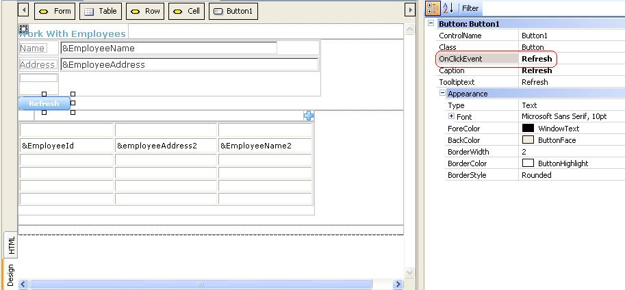
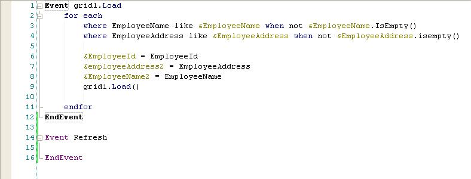

If the Automatic Refresh property is set to "No", user action is needed to make the grid load the records that satisfy the conditions entered.
Refresh behavior after entering grid filters (only if the grid has a base table)If the grid has a base table, the filters in the form (variables related with conditions) are automatically identified, so that when the user changes any of these variables, that action is detected, and it is assumed that the user wants to apply the filters immediately . Of course we are assuming that the Automatic Refresh object property is set to "No". The behavior is as follows:
Important Note: If a web control is associated with an Enter Event, and the user clicks on that control after entering any variable condition, the following will happen:
Refresh behavior after entering grid filters (grids which do not have a base table)In this case, changes in filters related with the grid cannot be detected, so the user's intention to load the grid from the entered filters cannot be known in advance. The following possibilities are available to make the grid load after entering the filters: 1. Pressing the enter key if the Enter Event is defined in the source of the webpanel. This is due to the Enter Key Behavior Note that in this case the Enter Event code is also executed. The Enter Event is not generally used for this purpose. 2. Clicking on a button or image to trigger the search after entering the filters. The user event associated to that button or image has to refresh the grid by taking into account the filters entered. Thus, one possibility is to associate it to the Refresh event.
  Another possibility is that we use the refresh command inside the user event associated to that button. Suppose the user event is "Search", the event may be as follows: Event "Search" Note that if the event executes on the server side, it forces a refresh at any rate. See this link to clarify that idea. Notes
|
| Backlinks | |
| Automatic Grid Refresh | Enter Key Behavior |